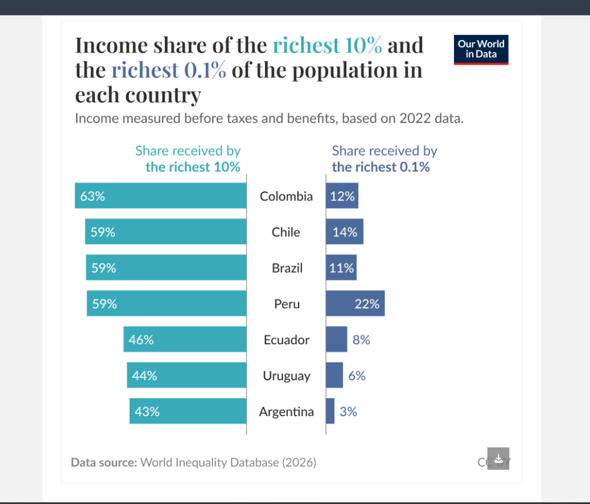

Deconstructing the layered grammar of graphics
About this exercise
This exercise asked me to pick a published data visualisation and break it down using Wickham’s layered grammar of graphics, identifying its data, geoms, aesthetics, scales, and other components. This matters because understanding these theoretical building blocks helps explain how visualisations are constructed and provides a foundation for using tools like ggplot2 and other data visualisation software.
Chosen visualisation

1. Data
The chart uses data from the World Inequality Database, based on 2022 income data. It shows the income share received by the richest 10% and richest 0.1% in seven South American countries.
2. Geoms
The main geometric shape is horizontal bars. Each country has two bars representing the two income groups.
3. Aesthetics (aes)
Country is the categorical variable, while income share (%) determines the length of each bar. Colour distinguishes the richest 10% (teal) from the richest 0.1% (navy).
4. Statistical transformation
The percentages shown are income-share measures, which are already calculated from the underlying income data — this transformation (aggregating total income earned by a percentile group, then dividing by total income in the country) happens upstream in the data itself rather than being computed live by the visualisation. There does not appear to be an additional statistical transformation applied by the chart's plotting layer.
5. Scale
The teal colour represents the richest 10%, while the navy colour represents the richest 0.1%. The bar lengths are measured using a percentage scale showing each group's share of total income.
6. Position adjustment
The two sets of bars are arranged side-by-side on opposite sides of a central line, with the richest 10% extending to the left and the richest 0.1% extending to the right. This is a mirrored arrangement rather than a standard dodged bar chart.
7. Coordinate system & faceting
The visualisation uses a standard Cartesian coordinate system. Although the two sides may look like separate panels, they are not technically two facets; the bars are part of one combined chart with the countries listed along the centre. There is no formal faceting used.
Reference
Our World in Data. (2026). Income share of the richest 10% and the richest 0.1% of the population in each country [Data source: World Inequality Database]. https://ourworldindata.org/data-insights/what-is-the-most-unequal-country-in-south-america-it-depends-on-what-metric-you-look-at